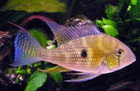

Cará:
Acará ou Cará ( Geophagus brasiliensis) é um peixe de água doce da família Cichlidae, conhecido popularmente de Cará, Acará Topete e Papa-Terra. Além disso, a sua espécie é distribuída nas Bacias do rio Doce, do rio Paraíba do Sul e do rio São Francisco.
Descrição:
O acará é um peixe de água doce muito resistente, ele tem uma coloração bem característica, principalmente quando bem aclimatado e alimentado, mostra pontos fosforescentes e cores vermelho vinho, azul petróleo e cinza, entre outras cores. Pesca:
Para as artes de pesca, são usados modelos leves e mastros telescópicos ou modelos de bambu de 3 a 4 m. A linha de pesca pode ter 0,25 mm, mais uma pequena guia. Quanto à isca, prefiro modelos como milho, larvas e minhocas.
| Cará |
|  |
| Tamanho: 20 cm Peso: 1,6 kg |
Email:Chssilva1419@gmail.com